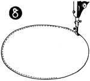
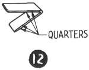

1952—How to Make Hats
by Ruby Carnahan
Wool Felt Beret
MATERIAL REQUIRED
- Use Beret Pattern on page 85
- 1/2 yard of felt is required to make the beret
- 3/4 yard of grosgrain ribbon for headband
CUTTING PATTERN AND MATERIAL
(Illus. 1) Place pattern on a fold of paper and cut out. Cut two of these patterns, and on one pattern cut out headsize as marked on pattern.
(Illus. 2) Mark back and front of pattern.
(Illus. (3 and 3a) Place pattern on felt and mark around felt with tailor's chalk and cut out.
SEWING BERET TOGETHER
(Illus. 4) Baste dart in top of Beret, stitch and press seam open. (Illus. 4a)
Baste seam in facing brim of Beret and stitch (Illus. 5) and press seam open (Illus. 6).
(Illus. 7) Place right sides of top brim and facing brim of Beret together.
Baste around brim edge, (Illus. 8) stitch and remove basting threads. Turn Beret to right side.
 (Illus. 9) Slip a piece of paper rope large
enough to
fit around edge of beret brim inside Beret and hold over steam, manipulating
edge of beret with fingers until edge around brim is smooth and even. Instructions
for Beret headband page 46.
(Illus. 9) Slip a piece of paper rope large
enough to
fit around edge of beret brim inside Beret and hold over steam, manipulating
edge of beret with fingers until edge around brim is smooth and even. Instructions
for Beret headband page 46.
BERET WITH A BAND
Follow above instructions for Beret except headband finish. (Illus. 10) Cut a felt band double the width you want band to be and your headsize length. Join ends of band together with a furring stitch.
Fold band lengthwise and steam press (Illus. 11).
Fold band again into quarters (Illus. 12) and mark. Fold Beret headsize into quarters and mark.
Have seams on band and seam on Beret together, match markings on band and Beret headsize, pin together and stitch (Illus. 13).